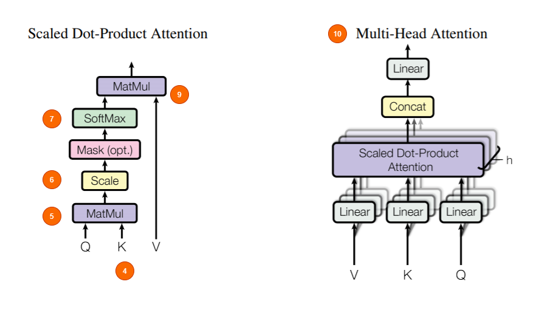
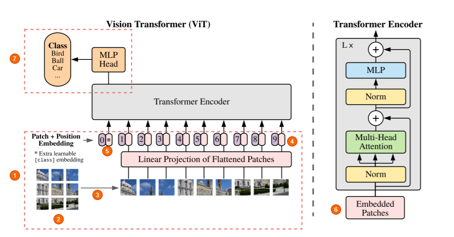
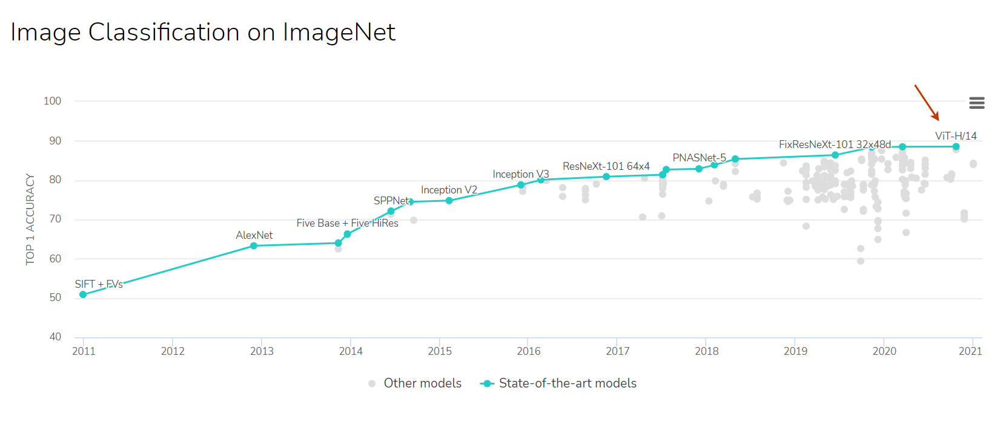

Vision Transformer: A gentle introduction
I'll briefly try to explain the fundamental ideas behind Vision Transformers and how it works. Vision Transformers were first introduced in the paper AN IMAGE IS WORTH 16X16 WORDS: TRANSFORMERS FOR IMAGE RECOGNITION AT SCALE by the Google Brain team in late October 2020. To understand how ViT works, obviously you must have prior knowledge about how Transformers work and what problems it solved. I'll briefly introduce you to how transformers work before getting into the details of the topic at hand - ViT. If you are new to NLP and interested in learning more about the transformer models and get a fair intuition of how they actually work, I recomment checking out the fantastic blog posts of Jay Allamar. (The image above was also inspired from one of his blog posts).
Transformers: A brief overview
Transformer models well and truly revolutionized Natural Language Processing as we know. When they were first introduced they broke multiple NLP records and were pushing the then State of the Art. Now, they have become a de-facto standard for modern NLP tasks and they bring spectacular performance gains when compared to the previous generation of models like LSTMs and GRUs. By far the most important paper that transformed the NLP landscape is the "Attention is all you need" paper. The transformer architecture was introduced in this paper.
Motivations:
The existing models at that time for sequence and NLP tasks mostly involved RNNs. The problem with these networks were that they couldn't capture long term dependencies. LSTMs and GRUs - variants of RNNs were capable of capturing the dependencies but it is also limited.
So, the main inspiration behind the transformer was to get rid of this recurrence and still end up capturing almost all the dependencies, to be precise global dependencies, yes the reference window of tranformers is full-range. This was achieved using a variant of attention mechanism called self-attention (multi-headed) which is very important for their success. One other advantage of Tranformer models are that they are highly parallelizable.
Transformer Architecture
Note: The architecture diagrams are annotated with the corresponding step in the explanation.
- Transformer has two parts, the decoder which is on the left side on the above diagram and the encoder which is on the right.
- Imagine we are doing machine translation for now.
- the encoder takes the input data (sentence), and produces an intermediate representation of the input.
- The decoder decodes this intermediate representation step by step and generates the output. The difference however is in how it is doing this.
- Understanding the Encoder section is enough for ViT.
Tranformers: Step by step overview
- The input data first gets embedded into a vector. The embedding layer helps us grab a learned vector representation for each word.
- In the next stage a positional encoding is injected into the input embeddings. This is because a transformer has no idea about the order of the sequence that is being passed as input - for example a sentence.
- Now the multi-headed attention is where things get a little different.
- Multi-Headed Attention consists of three learnable vectors. Query, Key and Value vectors. The motivation of this reportedly comes from information retrival where you search (query) and the search engine compares your query with a key and responds with a value.
- The Q and K representations undergo a dot product matrix multiplication to produce a score matrix which represents how much a word has to attend to every other word. Higher score means more attention and vice-versa.
- Then the Score matrix is scaled down according to the dimensions of the Q and K vectors. This is to ensure more stable gradients as multiplication can have exploding effects.
- Next the Score matrix is softmaxed to turn attention scores into probabilities. Obviously higher scores are heightened and lower scores are depressed. This ensures the model to be confident on which words to attend to.
- Then the resultant matrix with probabilites is multiplied with the value vector. This will make the higher probaility scores the model has learned to be more important. The low scoring words will effectively drown out to become irrelevant
- Then, the concatenated output of QK and V vectors are fed into the Linear layer to process further.
- Self-Attention is performed for each word in the sequence. Since one doesn't depend on the other a copy of the self attention module can be used to process everything simultaneously making this multi-headed.
- Then the output value vectors are concatenated and added to the residual connection coming from the input layer and then the resultant respresentation is passed into a LayerNorm for normalization. (Residual connection help gradients flow through the network and LayernNorm helps reduce the training time by a small fraction and stabilize the network)
- Further, the output is passed into a point-wise feed forward network to obtain an even richer representation.
- The outputs are again Layer-normed and residuals are added from the previous layer.
- The output from the encoder along with the inputs (if any) from the previous time steps/words are fed into the decoder where the outputs undergo masked-multi headed attention before being fed into the next attention layer along with the output from encoder.
- Masked multi headed attention is necessary because the network shouldn't have any visibility into the words that are to come later in the sequence while decoding, to ensure there is no leak. This is done by masking the entries of words that come later in the series in the Score matrix. Current and previous words in the sequence are added with 1 and the future word scores are added with -inf. This ensures the future words in the series get drowned out into 0 when performing softmax to obtain the probabilities, while the rest are retained.
- There are residual connections here as well, to improve the flow of gradients. Finally the output is sent to a Linear layer and softmaxed to obtain the outputs in probabilities.
Multi-headed-attention architecture:
How Vision Tranformers works?
Now that we have covered transformers' internal working at a high level, we are finally ready to tackle Vision Tranformers. Applying Transformers on images was always going to be a challenge for the following reasons,
As I stand out here in the wonders of the unknown at Hadley, I sort of realize there’s a fundamental truth to our nature, Man must explore, and this is exploration at its greatest.
- Unlike words/sentences/paragraphs, images contain much much more information in them basically in form of pixels.
- It would be very hard, even with current hardware to attend to every other pixel in the image.
- Instead, a popular alternative was to use localized attention.
- In fact CNNs do something very similar through convolutions and the receptive field essentially grows bigger as we go deeper into the model's layers, but Tranformers were always going to be computationally more expensive than CNNs because of the' nature of Transformers. And of course, we know how incredibly much CNNs have contributed to the current advancements in Computer Vision.
- Understanding the Encoder section is enough for ViT.
Google researchers have proposed something different in their paper than can possibly be the next big step in Computer Vision. They show that the reliance on CNNs may not be necessary anymore. So, let's dive right in and explore more about Vision Transformers.
Vision Transformer Architecture
- They are only using the Encoder part of the transformer but the difference is in how they are feeding the images into the network.
- They are breaking down the image into fixed size patches. So one of these patches can be of dimension 16x16 or 32x32 as proposed in the paper. More patches means more simpler it is to train these networks as the patches themselves get smaller. Hence we have that in the title - "An Image is worth 16x16 words".
- The patches are then unrolled (flattened) and sent for further processing into the network.
- Unlike NNs here the model has no idea whatsoever about the position of the samples in the sequence, here each sample is a patch from the input image. So the image is fed along with a positional embedding vector and into the encoder. One thing to note here is the positional embeddings are also learnable so you don't actually feed hard-coded vectors w.r.t to their positions.
- There is also a special token at the start just like BERT.
- So each image patch is first unrolled (flattened) into a big vector and gets multiplied with an embedding matrix which is also learnable, creating embedded patches. And these embedded patches are combined with the positional embedding vector and that gets fed into the Tranformer. Note: From here everything is just the same as a standard transformer
- With the only difference being, instead of a decoder the output from the encoder is passed directly into a Feed Forward Neural Network to obtain the classification output.
Things to note:
- The paper ALMOST completely neglects Convolutions.
- They are however using a couple of variants of ViT in which Convolutional embeddings of image patches are used. But that doesn't seem to impact performance much.
- Vision Transformers, at the time of writing this are topping Image Classification benchmarks on ImageNet. 
- There are a lot more interesting things in this paper but the one thing that stands out for me and potentially shows the power of transformers over CNNs is illustrated in the image below which shows the attention distance with respect to the layers
- The graph above suggests that the Transformers are already capable of paying attention to regions that are far apart right from the starting layers of the network which is a pretty significant gain the Transformers bring over CNNs which has a finite receptive field at the start.